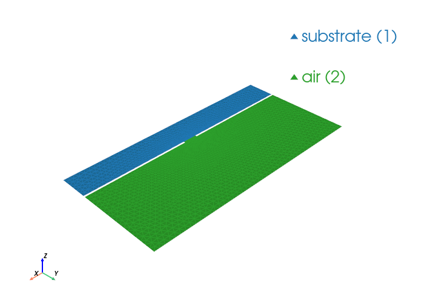

Slotline Modes#
This notebook builds a boxed slotline cross-section (substrate + air + two PEC slot conductors), solves eigenmodes with WaveguideModeSolver, and plots mode fields.
from palacetoolkit.mode_solver import WaveguideModeSolver, ModeMetrics
from palacetoolkit.utils import write_and_finalize_gmsh
from palacetoolkit.viz import view_mesh
import gmsh
import numpy as np
def make_slotline_mesh(
box_w=8.0,
h_sub=1.0,
h_air=3.0,
slot_gap=0.5,
metal_t=0.06,
lc_bulk=0.18,
lc_slot=0.04,
filename=None,
):
gmsh.initialize()
gmsh.option.setNumber("General.Verbosity", 0)
gmsh.model.add("slotline_modes")
sub = gmsh.model.occ.addRectangle(-box_w / 2, -h_sub, 0, box_w, h_sub)
air = gmsh.model.occ.addRectangle(-box_w / 2, 0.0, 0, box_w, h_air)
left_w = (box_w - slot_gap) / 2
right_w = left_w
left_metal = gmsh.model.occ.addRectangle(-box_w / 2, 0.0, 0, left_w, metal_t)
right_metal = gmsh.model.occ.addRectangle(slot_gap / 2, 0.0, 0, right_w, metal_t)
_, outmap = gmsh.model.occ.fragment([(2, sub), (2, air), (2, left_metal), (2, right_metal)], [])
gmsh.model.occ.remove(list(outmap[2]) + list(outmap[3]), recursive=True)
gmsh.model.occ.synchronize()
all_surfs = [t for _, t in gmsh.model.getEntities(2)]
substrate_surfs = []
air_surfs = []
for tag in all_surfs:
_, cy, _ = gmsh.model.occ.getCenterOfMass(2, tag)
if cy < -1e-9:
substrate_surfs.append(tag)
else:
air_surfs.append(tag)
gmsh.model.addPhysicalGroup(2, substrate_surfs, tag=1, name="substrate")
gmsh.model.addPhysicalGroup(2, air_surfs, tag=2, name="air")
bnd = gmsh.model.getBoundary([(2, t) for t in substrate_surfs + air_surfs], oriented=False, combined=False)
edge_tags = sorted({abs(t) for _, t in bnd})
left_slot_pec = []
right_slot_pec = []
open_edges = []
for et in edge_tags:
ex, ey, _ = gmsh.model.occ.getCenterOfMass(1, et)
on_metal_y = (-1e-6 <= ey <= metal_t + 1e-6)
if on_metal_y and ex < -slot_gap / 2 + 1e-6:
left_slot_pec.append(et)
elif on_metal_y and ex > slot_gap / 2 - 1e-6:
right_slot_pec.append(et)
else:
open_edges.append(et)
if left_slot_pec:
gmsh.model.addPhysicalGroup(1, left_slot_pec, tag=1, name="slot_pec_left")
if right_slot_pec:
gmsh.model.addPhysicalGroup(1, right_slot_pec, tag=2, name="slot_pec_right")
if open_edges:
gmsh.model.addPhysicalGroup(1, open_edges, tag=3, name="open_boundary")
for _, ptag in gmsh.model.getEntities(0):
x, y, _ = gmsh.model.getValue(0, ptag, [])
near_slot = abs(x) <= (slot_gap + 1.0) and -0.2 <= y <= (metal_t + 0.4)
gmsh.model.mesh.setSize([(0, ptag)], lc_slot if near_slot else lc_bulk)
gmsh.model.mesh.generate(2)
return write_and_finalize_gmsh(filename, prefix="wg_slotline_")
eps_sub = 4.1
eps_air = 1.0
mu_r = 1.0
omega = 1.0
mesh_file = make_slotline_mesh(
box_w=8.0,
h_sub=1.0,
h_air=3.0,
slot_gap=0.5,
metal_t=0.06,
)
view_mesh(mesh_file)
# Only slot metal boundaries are PEC. Open boundaries stay non-PEC.
pec_bdr = [1, 2]
solver = WaveguideModeSolver(
mesh_file=mesh_file,
order=2,
pec_bdr=pec_bdr,
materials=[
{"attrs": [1], "eps_r": eps_sub, "mu_r": mu_r},
{"attrs": [2], "eps_r": eps_air, "mu_r": mu_r},
],
omega=omega,
)
results = solver.solve(num_modes=8, mode_idx=1, target=0.0, save=0, num_procs=4)
print("Computed slotline modes:")
for i in sorted(results):
kn = results[i].k_n
print(f" Mode {i:2d}: kn={kn.real:+10.6f}{kn.imag:+10.6f}j")
Loading mesh file: /tmp/wg_slotline_1bee_qe0.msh
Groups to render transparent: ['air_none', 'air_plastic_enclosure']
Mesh loaded successfully with 2 cell blocks
Found 5224 triangles total
Physical group tags in mesh: {1: 'substrate', 2: 'air'}

Running: /home/martin/.cache/palacetoolkit/runtime/palace-cpu-v0.17.0/bin/palace --serial /tmp/wg_slotline_1bee_qe0_modes/config.json
>> /home/martin/.cache/palacetoolkit/runtime/palace-cpu-v0.17.0/bin/palace-x86_64.bin /tmp/wg_slotline_1bee_qe0_modes/config.json
_____________ _______
_____ __ \____ __ /____ ____________
____ /_/ / __ ` / / __ ` / ___/ _ \
___ _____/ /_/ / / /_/ / /__/ ___/
/__/ \___,__/__/\___,__/\_____\_____/
Git changeset ID: v0.17.0-194-g01f5d9bd1
Running with 1 MPI process, 1 OpenMP thread
Device configuration: omp,cpu
Memory configuration: host-std
libCEED backend: /cpu/self/xsmm/blocked
--> Warning!
One or more external boundary attributes has no associated boundary condition!
"PMC"/"ZeroCharge" condition is assumed!
Boundary attribute list: 3
Characteristic length and time scales:
Lc = 8.000e+00 m, tc = 2.669e+01 ns
Finished partitioning mesh into 1 subdomain
Mesh curvature order: 1
Mesh bounding box:
(Xmin, Ymin) = (-4.000e+00, -1.000e+00) m
(Xmax, Ymax) = (+4.000e+00, +3.000e+00) m
Parallel Mesh Stats:
minimum average maximum total
vertices 2765 2765 2765 2765
edges 7988 7988 7988 7988
elements 5224 5224 5224 5224
neighbors 0 0 0
minimum maximum
h 0.00292176 0.026074
kappa 1 2.31839
Estimated current per-rank memory usage is: Min. 53.5M, Max. 53.5M, Avg. 53.5M, Total 53.5M
Estimated current per-node memory usage is: Min. 53.5M, Max. 53.5M, Avg. 53.5M, Total 53.5M
Configuring 2D waveguide mode analysis at f = 4.775e-02 GHz (omega = 8.005538e+00)
ND space: 26424 DOFs, H1 space: 10753 DOFs, total: 37177
Auto kn_target = 1.700117e+01 (from max(mu_r) * max(epsilon_r) = 4.100000e+00)
Solving GEP for 8 propagation mode(s)...
Residual norms for GMRES solve
0 (restart 0) KSP residual norm 2.145665e-01
1 (restart 0) KSP residual norm 2.182764e-12
GMRES solver converged in 1 iteration (avg. reduction factor: 1.017e-11)
Residual norms for GMRES solve
0 (restart 0) KSP residual norm 9.762598e-03
1 (restart 0) KSP residual norm 9.795242e-14
GMRES solver converged in 1 iteration (avg. reduction factor: 1.003e-11)
Residual norms for GMRES solve
0 (restart 0) KSP residual norm 3.191016e-02
1 (restart 0) KSP residual norm 3.462617e-13
GMRES solver converged in 1 iteration (avg. reduction factor: 1.085e-11)
Residual norms for GMRES solve
0 (restart 0) KSP residual norm 2.596788e-02
1 (restart 0) KSP residual norm 2.144417e-13
GMRES solver converged in 1 iteration (avg. reduction factor: 8.258e-12)
Residual norms for GMRES solve
0 (restart 0) KSP residual norm 7.390447e-03
1 (restart 0) KSP residual norm 8.028338e-13
GMRES solver converged in 1 iteration (avg. reduction factor: 1.086e-10)
Residual norms for GMRES solve
0 (restart 0) KSP residual norm 8.439197e-03
1 (restart 0) KSP residual norm 2.139547e-12
GMRES solver converged in 1 iteration (avg. reduction factor: 2.535e-10)
Residual norms for GMRES solve
0 (restart 0) KSP residual norm 8.002538e-03
1 (restart 0) KSP residual norm 1.995751e-12
GMRES solver converged in 1 iteration (avg. reduction factor: 2.494e-10)
Residual norms for GMRES solve
0 (restart 0) KSP residual norm 2.016097e-02
1 (restart 0) KSP residual norm 9.890434e-13
GMRES solver converged in 1 iteration (avg. reduction factor: 4.906e-11)
Residual norms for GMRES solve
0 (restart 0) KSP residual norm 1.552247e-02
1 (restart 0) KSP residual norm 1.629125e-13
GMRES solver converged in 1 iteration (avg. reduction factor: 1.050e-11)
Residual norms for GMRES solve
0 (restart 0) KSP residual norm 1.756288e-02
1 (restart 0) KSP residual norm 3.522681e-13
GMRES solver converged in 1 iteration (avg. reduction factor: 2.006e-11)
Residual norms for GMRES solve
0 (restart 0) KSP residual norm 1.205492e-02
1 (restart 0) KSP residual norm 2.018605e-13
GMRES solver converged in 1 iteration (avg. reduction factor: 1.675e-11)
Residual norms for GMRES solve
0 (restart 0) KSP residual norm 8.475711e-03
1 (restart 0) KSP residual norm 2.350458e-13
GMRES solver converged in 1 iteration (avg. reduction factor: 2.773e-11)
Residual norms for GMRES solve
0 (restart 0) KSP residual norm 1.904484e-02
1 (restart 0) KSP residual norm 2.286182e-13
GMRES solver converged in 1 iteration (avg. reduction factor: 1.200e-11)
Residual norms for GMRES solve
0 (restart 0) KSP residual norm 3.328567e-02
1 (restart 0) KSP residual norm 4.153619e-13
GMRES solver converged in 1 iteration (avg. reduction factor: 1.248e-11)
Residual norms for GMRES solve
0 (restart 0) KSP residual norm 4.425635e-02
1 (restart 0) KSP residual norm 4.317416e-13
GMRES solver converged in 1 iteration (avg. reduction factor: 9.755e-12)
Residual norms for GMRES solve
0 (restart 0) KSP residual norm 2.259366e-02
1 (restart 0) KSP residual norm 5.320950e-13
GMRES solver converged in 1 iteration (avg. reduction factor: 2.355e-11)
Residual norms for GMRES solve
0 (restart 0) KSP residual norm 2.411787e-02
1 (restart 0) KSP residual norm 5.768640e-14
GMRES solver converged in 1 iteration (avg. reduction factor: 2.392e-12)
Residual norms for GMRES solve
0 (restart 0) KSP residual norm 2.414558e-02
1 (restart 0) KSP residual norm 4.718546e-13
GMRES solver converged in 1 iteration (avg. reduction factor: 1.954e-11)
Residual norms for GMRES solve
0 (restart 0) KSP residual norm 1.584877e-02
1 (restart 0) KSP residual norm 1.898426e-13
GMRES solver converged in 1 iteration (avg. reduction factor: 1.198e-11)
Residual norms for GMRES solve
0 (restart 0) KSP residual norm 9.403778e-03
1 (restart 0) KSP residual norm 3.033498e-14
GMRES solver converged in 1 iteration (avg. reduction factor: 3.226e-12)
Residual norms for GMRES solve
0 (restart 0) KSP residual norm 5.216212e-03
1 (restart 0) KSP residual norm 6.923114e-14
GMRES solver converged in 1 iteration (avg. reduction factor: 1.327e-11)
Residual norms for GMRES solve
0 (restart 0) KSP residual norm 1.117613e-02
1 (restart 0) KSP residual norm 1.934591e-13
GMRES solver converged in 1 iteration (avg. reduction factor: 1.731e-11)
Residual norms for GMRES solve
0 (restart 0) KSP residual norm 2.173702e-02
1 (restart 0) KSP residual norm 1.105686e-13
GMRES solver converged in 1 iteration (avg. reduction factor: 5.087e-12)
Residual norms for GMRES solve
0 (restart 0) KSP residual norm 1.442944e-02
1 (restart 0) KSP residual norm 1.390508e-13
GMRES solver converged in 1 iteration (avg. reduction factor: 9.637e-12)
Residual norms for GMRES solve
0 (restart 0) KSP residual norm 6.461311e-03
1 (restart 0) KSP residual norm 8.445615e-14
GMRES solver converged in 1 iteration (avg. reduction factor: 1.307e-11)
Residual norms for GMRES solve
0 (restart 0) KSP residual norm 7.498132e-03
1 (restart 0) KSP residual norm 2.895418e-13
GMRES solver converged in 1 iteration (avg. reduction factor: 3.862e-11)
Residual norms for GMRES solve
0 (restart 0) KSP residual norm 6.419824e-03
1 (restart 0) KSP residual norm 3.032697e-13
GMRES solver converged in 1 iteration (avg. reduction factor: 4.724e-11)
Residual norms for GMRES solve
0 (restart 0) KSP residual norm 2.318140e-03
1 (restart 0) KSP residual norm 2.648442e-13
GMRES solver converged in 1 iteration (avg. reduction factor: 1.142e-10)
Residual norms for GMRES solve
0 (restart 0) KSP residual norm 5.792684e-03
1 (restart 0) KSP residual norm 9.764883e-13
GMRES solver converged in 1 iteration (avg. reduction factor: 1.686e-10)
Residual norms for GMRES solve
0 (restart 0) KSP residual norm 6.641383e-03
1 (restart 0) KSP residual norm 1.085537e-12
GMRES solver converged in 1 iteration (avg. reduction factor: 1.635e-10)
Residual norms for GMRES solve
0 (restart 0) KSP residual norm 4.517444e-03
1 (restart 0) KSP residual norm 6.141123e-13
GMRES solver converged in 1 iteration (avg. reduction factor: 1.359e-10)
Residual norms for GMRES solve
0 (restart 0) KSP residual norm 3.162475e-03
1 (restart 0) KSP residual norm 1.693222e-13
GMRES solver converged in 1 iteration (avg. reduction factor: 5.354e-11)
Residual norms for GMRES solve
0 (restart 0) KSP residual norm 2.237916e-03
1 (restart 0) KSP residual norm 4.877262e-14
GMRES solver converged in 1 iteration (avg. reduction factor: 2.179e-11)
Residual norms for GMRES solve
0 (restart 0) KSP residual norm 2.928856e-03
1 (restart 0) KSP residual norm 3.694241e-13
GMRES solver converged in 1 iteration (avg. reduction factor: 1.261e-10)
Residual norms for GMRES solve
0 (restart 0) KSP residual norm 3.352703e-03
1 (restart 0) KSP residual norm 4.084166e-13
GMRES solver converged in 1 iteration (avg. reduction factor: 1.218e-10)
Residual norms for GMRES solve
0 (restart 0) KSP residual norm 2.712324e-03
1 (restart 0) KSP residual norm 8.378083e-13
GMRES solver converged in 1 iteration (avg. reduction factor: 3.089e-10)
Residual norms for GMRES solve
0 (restart 0) KSP residual norm 1.734105e-03
1 (restart 0) KSP residual norm 5.708268e-13
GMRES solver converged in 1 iteration (avg. reduction factor: 3.292e-10)
Residual norms for GMRES solve
0 (restart 0) KSP residual norm 2.427189e-03
1 (restart 0) KSP residual norm 1.173842e-12
GMRES solver converged in 1 iteration (avg. reduction factor: 4.836e-10)
Residual norms for GMRES solve
0 (restart 0) KSP residual norm 2.590368e-03
1 (restart 0) KSP residual norm 1.731610e-12
GMRES solver converged in 1 iteration (avg. reduction factor: 6.685e-10)
Residual norms for GMRES solve
0 (restart 0) KSP residual norm 2.717899e-03
1 (restart 0) KSP residual norm 1.910043e-12
GMRES solver converged in 1 iteration (avg. reduction factor: 7.028e-10)
Residual norms for GMRES solve
0 (restart 0) KSP residual norm 1.570737e-03
1 (restart 0) KSP residual norm 2.073143e-13
GMRES solver converged in 1 iteration (avg. reduction factor: 1.320e-10)
Residual norms for GMRES solve
0 (restart 0) KSP residual norm 2.293851e-03
1 (restart 0) KSP residual norm 6.278596e-13
GMRES solver converged in 1 iteration (avg. reduction factor: 2.737e-10)
Residual norms for GMRES solve
0 (restart 0) KSP residual norm 3.017922e-03
1 (restart 0) KSP residual norm 7.230997e-13
GMRES solver converged in 1 iteration (avg. reduction factor: 2.396e-10)
Residual norms for GMRES solve
0 (restart 0) KSP residual norm 2.690088e-03
1 (restart 0) KSP residual norm 9.985685e-13
GMRES solver converged in 1 iteration (avg. reduction factor: 3.712e-10)
Residual norms for GMRES solve
0 (restart 0) KSP residual norm 3.007386e-03
1 (restart 0) KSP residual norm 1.288091e-12
GMRES solver converged in 1 iteration (avg. reduction factor: 4.283e-10)
Residual norms for GMRES solve
0 (restart 0) KSP residual norm 2.583587e-03
1 (restart 0) KSP residual norm 1.220376e-12
GMRES solver converged in 1 iteration (avg. reduction factor: 4.724e-10)
Residual norms for GMRES solve
0 (restart 0) KSP residual norm 1.967318e-03
1 (restart 0) KSP residual norm 3.405670e-13
GMRES solver converged in 1 iteration (avg. reduction factor: 1.731e-10)
Residual norms for GMRES solve
0 (restart 0) KSP residual norm 2.339312e-03
1 (restart 0) KSP residual norm 4.099676e-13
GMRES solver converged in 1 iteration (avg. reduction factor: 1.753e-10)
Residual norms for GMRES solve
0 (restart 0) KSP residual norm 2.904494e-03
1 (restart 0) KSP residual norm 6.868373e-13
GMRES solver converged in 1 iteration (avg. reduction factor: 2.365e-10)
Residual norms for GMRES solve
0 (restart 0) KSP residual norm 4.855106e-03
1 (restart 0) KSP residual norm 7.641722e-13
GMRES solver converged in 1 iteration (avg. reduction factor: 1.574e-10)
Residual norms for GMRES solve
0 (restart 0) KSP residual norm 2.670217e-03
1 (restart 0) KSP residual norm 7.241076e-13
GMRES solver converged in 1 iteration (avg. reduction factor: 2.712e-10)
Residual norms for GMRES solve
0 (restart 0) KSP residual norm 3.356130e-03
1 (restart 0) KSP residual norm 5.517568e-13
GMRES solver converged in 1 iteration (avg. reduction factor: 1.644e-10)
Residual norms for GMRES solve
0 (restart 0) KSP residual norm 4.462211e-03
1 (restart 0) KSP residual norm 8.901400e-13
GMRES solver converged in 1 iteration (avg. reduction factor: 1.995e-10)
Residual norms for GMRES solve
0 (restart 0) KSP residual norm 5.438896e-03
1 (restart 0) KSP residual norm 1.188306e-12
GMRES solver converged in 1 iteration (avg. reduction factor: 2.185e-10)
Found 8 converged eigenvalues (sigma = -2.890398e+02)
eig 0: kn = 1.340833e+01-6.588649e-13i, n_eff = 1.674882e+00-8.230114e-14i
eig 1: kn = 1.028741e+01-7.565536e-11i, n_eff = 1.285036e+00-9.450377e-12i
eig 2: kn = 9.745884e+00-1.565874e-11i, n_eff = 1.217393e+00-1.955989e-12i
eig 3: kn = 8.250051e+00-5.765115e-09i, n_eff = 1.030543e+00-7.201408e-10i
eig 4: kn = 8.174035e+00+3.347938e-11i, n_eff = 1.021047e+00+4.182027e-12i
eig 5: kn = 7.983505e+00+6.257888e-09i, n_eff = 9.972478e-01+7.816948e-10i
eig 6: kn = 6.777021e+00-2.212932e-11i, n_eff = 8.465416e-01-2.764251e-12i
eig 7: kn = 5.995814e+00+3.177611e-10i, n_eff = 7.489583e-01+3.969266e-11i
Computing solution error estimates and performing postprocessing
m, Re{kn} (1/m), Im{kn} (1/m), Re{n_eff}, Im{n_eff}, Error (Bkwd.), Error (Abs.)
1, +1.676041e+00, -8.235812e-14, +1.674882e+00, -8.230114e-14, +2.165548e-16, +3.752408e-12
2, +1.285926e+00, -9.456920e-12, +1.285036e+00, -9.450377e-12, +1.025203e-16, +1.059433e-12
3, +1.218235e+00, -1.957343e-12, +1.217393e+00, -1.955989e-12, +3.978801e-15, +3.881822e-11
4, +1.031256e+00, -7.206393e-10, +1.030543e+00, -7.201408e-10, +3.450612e-15, +2.956458e-11
5, +1.021754e+00, +4.184922e-12, +1.021047e+00, +4.182027e-12, +1.120797e-15, +9.548959e-12
6, +9.979382e-01, +7.822360e-10, +9.972478e-01, +7.816948e-10, +3.433407e-15, +2.885229e-11
7, +8.471277e-01, -2.766165e-12, +8.465416e-01, -2.764251e-12, +1.435721e-16, +1.118129e-12
8, +7.494768e-01, +3.972013e-11, +7.489583e-01, +3.969266e-11, +3.796683e-14, +2.840274e-10
Completed 0 iterations of adaptive mesh refinement (AMR):
Indicator norm = 1.951e-02, global unknowns = 37177
Max. iterations = 0, tol. = 1.000e-02
Estimated peak per-rank memory usage is: Min. 264.8M, Max. 264.8M, Avg. 264.8M, Total 264.8M
Estimated peak per-node memory usage is: Min. 264.8M, Max. 264.8M, Avg. 264.8M, Total 264.8M
Elapsed Time Report (s) Min. Max. Avg.
==============================================================
Initialization 0.006 0.006 0.006
Mesh Preprocessing 0.018 0.018 0.018
Operator Construction 0.057 0.057 0.057
Preconditioner 1.109 1.109 1.109
Eigenvalue Solve 0.263 0.263 0.263
Estimation 0.018 0.018 0.018
Construction 0.084 0.084 0.084
Solve 0.290 0.290 0.290
Postprocessing 0.967 0.967 0.967
Disk IO 0.006 0.006 0.006
--------------------------------------------------------------
Total 3.320 3.320 3.320
Peak Memory Per-Node Total Total HWM
==============================================================
Initialization 2.2M 2.2M 2.2M
Mesh Preprocessing 3.0M 3.0M 5.2M
Operator Construction 32.2M 32.2M 37.4M
Preconditioner 131.5M 131.5M 168.9M
Eigenvalue Solve 42.2M 42.2M 211.1M
Estimation 0.0K 0.0K 211.1M
Construction 6.9M 6.9M 218.0M
Solve 0.0K 0.0K 218.0M
Postprocessing 0.0K 0.0K 218.0M
Disk IO 2.7M 2.7M 220.7M
--------------------------------------------------------------
Total 241.7M 241.7M 241.7M
Computed slotline modes:
Mode 1: kn= +1.676041 -0.000000j
# Mesh visualization moved to pyvista-based VTU post-processing.
# For more details, see palacetoolkit.postpro_vtu utilities.
print("Mesh visualization moved to pyvista-based VTU post-processing.")
Mesh visualization moved to pyvista-based VTU post-processing.
# Field visualization is no longer available through the solver.
# Palace writes VTU field output files when save > 0 in solver.solve().
# Load the VTU files with pyvista for field visualization.
# For more details, see palacetoolkit.postpro_vtu utilities.
print("Field visualization moved to pyvista-based VTU post-processing.")
Field visualization moved to pyvista-based VTU post-processing.